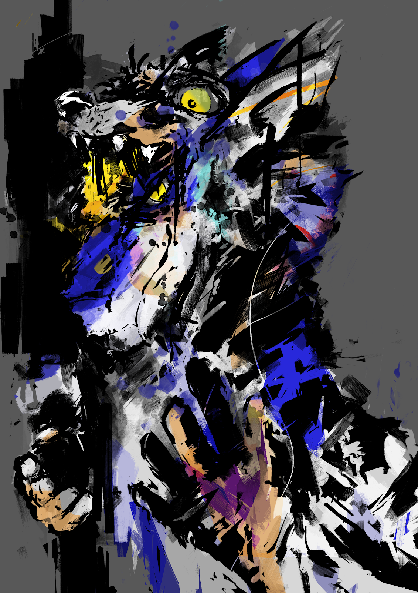

The Mask Makes the Man
Written by TwistedSnakes
Commissioned by Teryxc
Illustrated by SirSpaceDragurn

"Earth to Dex, earth to Dex, do you copy?"
"Huh, wait, what?" the white wolf almost tipped the chair he was sitting on with two legs. Flailing his arms, he grabbed the desk in front of him, saving himself from an embarrassing fall just in time.
The culprit for almost causing his fall was none other than a grinning sergal. His shiny fur was a deep maroon red which reflected the soft glow of the setting sun. "School's over, time to go home," the sergal rubbed the top of Dexter's head.
"Hey!" the white wolf protested as he shook the sergal's paw off. "I'm going, I'm going." He grabbed his books and threw them into his sling bag. He yanked the zip and pulled his bag shut.
Grunting as he lifted up his bag and slung it over his shoulders, he nodded to his friend. "Let's go, Chris".
"Okay!" Chris said cheerily. The two of them walked down the rows of tables to the door. "Goodbye Tharos! See you tomorrow Gin!" The sergal waved goodbye to the remaining students in the class as they left. Following behind Chris, the wolf kept his head low and avoided eye contact with the class.
Side by side, Chris and Dexter made their way down the street. Dexter was lost in thought as he moved in autopilot mode. Chris, however, was enthusiastically engaged in a one-way conversation with the wolf, who would noncommittally mumble words of agreement.
"So I think it'll be super cool if we had something to show for our time at school," Chris continued. "Oh wow, time flew so fast. Time to part ways. See ya!" Dexter looked up at the chipper sergal and nodded.
"Oh and don't forget, I'm coming over to your place tomorrow to study!" Chris piped up.
"Oh, yeah. Sure!" Dexter nodded. Chris was already bounding away. Dexter shrugged. Chris had always been very energetic while he was always more laid back. Well, at least that's what he calls it. During the times he was most honest with himself, the wolf considered himself a little on the awkward side.
There were moments when strokes of introspection would hit Dexter and this was one of them. It was surreal that the both of them came to be friends. He was sitting quietly on his desk on the first day of school when a flash of red shot over to him, placed his paws on Dexter's shoulder and said "Hi" in an awfully happy voice before disappearing. Since then, the maroon sergal had grown on him and they started hanging out.
His reminiscing was interrupted as his foot kicked something, sending it clattering to the side of the concrete pavement. "What the-" he started. He looked at the black and shiny rigid object that he had just kicked. Curious, Dexter picked it up. It was a smooth mask in the shape of a dragon's head, crafted with a solid resin material. The mask stared at him through its empty eyes.
He looked around for anyone who could have dropped the mask, but nobody on the street seemed to notice the wolf as he stood with the mask in his hands. "Huh," he thought to himself. Well, someone would probably look for it, right? He unzipped his sling bag, shoved the mask in and zipped it up. If anyone was looking for it, he could return it.
Hurrying up to make up for the lost time, he made his way home.
"Fompf!" his bag bounced on his bed as he threw it there. He took off his clothes and threw them into the corner, leaving the athletic wolf in nothing but his underwear. The fur on his back was covered with patches of light and dark grey fur that ran up his neck to the top of his head and down his arms and legs.
He sighed contentedly as he stepped into the shower. He liked ending the day with a hot shower to relax his muscles. The warm water trickled through his water-resistant fur and he used his paws to fluff his fur to absorb some of the water.
After he was sufficiently soaked, he shampooed his fur and washed it off. Drying off was the worse part. The large towels he had would not properly soak up all the water from his fur leaving his fur damp and clumped together. He rectified the problem with his hairdryer and soon his fur was fluffy again. One day he'd buy a wolf-sized hairdryer to install in his toilet to save him the trouble. He chuckled at his own joke. That would never happen. Maybe.
He put on a pair of comfy gym shorts, sat on the edge of his king-sized bed and fell back against its soft sheets. He glanced to the left and saw his sling bag. The thought of the mask suddenly came to him and he scrambled into a sitting position and opened his bag. The mask sat innocuously on top of his books.
What was the mask for anyway? Perhaps it was meant for a play? Or maybe a dragon-roleplayer had worn it for years and somehow dropped it tonight? He shrugged nonchalantly. What would the mask look like on him anyway?
He picked it up and sniffed it. It had a new chemical smell to it with a little scent of leather and rubber mixed in. That ruled out the roleplayer theory. He put the mask on and it sat snugly on top of his snout. The mask gave him a draconic head and his eyes looked fierce from behind the sharp edges of the eyehole.
Dexter looked at the mirror and admired himself. "That was fun, but time to sleep I guess," he thought. He tugged at the mask but his paw slipped off the resin. "Eh?" he gasped in surprise. He was sure he grabbed it tightly. With both hands this time he tried to pull the mask off but it was stuck to his muzzle.
"Nghn, it's not coming off," he gasped. He gave up and sat on his bed staring at the mirror. Well, the mask looked kind of hot on him actually. He blushed a little as his member started poking out against his shorts. Dexter hurriedly grabbed his bulge with his paw and lightly squeezed, trying to press his erection down.
Slowly, he began to rub his hardening cock. It felt good, no, better than what he was used to. Why was he so horny today? He shook his head. No matter, he'd just have a quick one and go to sleep after that.
He continued pawing his bulge through the nylon shorts. The arousal was getting stronger and each stroke and squeeze felt increasingly good. He gently pulled the top of his shorts down, revealing his fully-erect pink dick. Somehow with the mask on, he felt smug about himself.
He firmly stroked the base of his cock, feeling the ridges of his knot and squeezing the tip of his cock. He moaned softly as precum leaked from its tip. He grasped the base of his cock with his hand and stroked upwards. His breath was heavy and he took a deep breath as his fingers slowly squeezed their way to the tip of the dick. More shiny precum emerged from the sharp tip of his member.
He continued the stroking up and down his cock, feeling every inch of it. He blushed from under the mask as tension build up in his groin. As one paw stroked his member, the other was supporting him as he leaned back and threw his head backwards. His mouth was half-open and his tongue was hanging out.
The urge to come was rising. Pumping his cock faster and faster, his hips involuntarily thrust against his fist. "Mmft!" he gasped. His fingers were stroking its way up around his knot and up his shaft to the head. He stopped supporting his body with his paw and laid back on the bed. His free paw began massaging and squeezing his balls lightly.
"Ughn!" he moaned as he went over the edge. He shuddered as he came, his warm seed splashing across his white fur. He stroked his dick one last time, milking the last of the cum out and laid on his bed panting. Dizziness and fatigue took over and he fell into a deep sleep.
Dexter squinted as the sun's rays streamed through the window. What was last night about? That wank felt more erotic than normal. He didn't just feel horny, he felt more confident and raw. And it felt intense. He moaned quietly under his breath as the memories of the previous night's pleasure washed over his mind and without thinking he moved his paw over to his naked crotch.
His curtains fluttered in the wind sending shadows across his face. Wait. Sun? He turned to the wall clock hanging above his desk. "Oh crap, I'm late for school!" He pulled the bedsheets off and let the mask fall onto the bed. Wait, did the mask look a little blue? Perhaps he didn't look at it properly last night. No time to think about this. Quickly wiping his fur clean with his bedsheets, Dexter threw them into the washing machine.
Grabbing a fresh set of uniform, he quickly ripped them off the hanger, jumped into his pants and put his shirt on. He slung his sling bag over his unbuttoned shirt and ran out of the door, slamming it shut behind him.
The afternoon found the sergal and wolf sitting on the floor with a chabudai between them. The short table was covered with notes and worksheets filled with pencil scribbles and highlights and the two of them pored over their contents.
"Hmm, so if boric acid is added to the fuel, we get a blue flame right?" the sergal thought out loud. Dexter nodded absentmindedly, not listening to Chris. "Alright thanks!" he scribbled more notes on his worksheet.
The afternoon heat was getting to Dexter. Without thinking, he pulled off his shirt and threw it in front of him. "Crap!" he looked up to see his sweaty shirt hanging off the red sergal's snout. "Sorry!" he apologized, realizing that he had just stripped in front of his friend.
Grinning, Chris shook his head, letting the shirt fall to the floor. "That's fine. It was getting hot actually. If you don't mind..." he pulled off his shirt and hung it on the back of the nearby chair. Dexter blushed at the sight of sergal's chest. Chris had a muscular body build from his years of working out at the gym and the wolf couldn't help but admire it. The wolf quickly buried his nose in the notes, trying to hide his expression.
Dexter was too slow and Chris noticed the wolf's flustered expression. "Are you alright?" he asked concernedly.
"Huh? Yeah! I'm alright," Dexter peeked up from the table at his friend.
"You sure? You look like you're falling sick or something."
"Yeah, I'm just feeling a little hot. Yeah. Must be the weather," he lied.
Chris nodded in agreement. "I know right? Why don't you wash up in the toilet?"
Dexter complied. He got up to his feet and went to the toilet in his room. "Oh good," he thought as he looked in the mirror. His face wasn't as red as he had thought. He splashed water on his face and dried his fur off.
As he exited the toilet, Dexter heard a voice. "You called me?" he shouted into the living room.
"Huh? No?" the sergal's voice came back.
"The mask," a third voice called out. It sounded smooth yet firm with its statement.
"Huh?" the wolf gasped in surprise. He peered at the dark blue mask that was still on his bed from the morning.
"Sup," the mask spoke to him. The voice was coming from the mask, even though its jaw was not moving.
"A talking mask?" he stared in shock at his unexpected conversation partner.
"Yeap," the mask replied. "Helped you get your game on last night."
"Uh, alright," Dexter glared suspiciously. Wait, did the mask make him horny? Was that what it did? He remembered his self-pleasuring. The boldness. The fearlessness. The raw strength he felt.
"Liked it? Doing the things you want instead of hesitating and holding yourself back?" the mask encouraged.
The wolf nodded quietly.
"Well, put me on, I'll show you what you can do," the mask instructed.
Dexter gingerly picked up the mask and held it in front of him. "No worries kid, I don't bite," it edged him on. The wolf took a deep breath and put on the mask. Like before, it stuck to his face again and he felt an inner strength coursing through him. The mask wrapped around his head, forming a draconic hood and giving him a fierce look. He knew what he wanted, and what he wanted was sitting in the living room.
He strode out of his room. The red sergal was still focused on his studies. "Hey, welcome back. And nice mask," he commented.
"Come with me," Dexter instructed.
"Hmm?" the sergal turned to him puzzledly. He did comply and followed the masked wolf into the bedroom. "Yeah?"
Dexter held the sergal by his shoulders and pushed him onto the bed. "Hey, what gives?" he yelped as his butt landed on the comfy bed.
"You've been staring at my ass again, haven't you," Dexter taunted the sergal. Wait. This felt weird, was he flirting with his friend?
"Just roll with it, you'll be fine" a firm voice whispered into his ear.
"N-no, what are you doing?" the sergal gasped.
Still holding the sergal by his shoulders, Dexter whispered to him, "Well, since you want me, I'll give you what you want." He shoved the sergal onto his back and slid a claw down the front of his gym shorts.
Chris stared at Dexter apprehensively but didn't make a move as his shorts were slowly pulled down, revealing his member poking halfway out of its sheath. The wolf ran a finger from the base of the sergal's dick up to its tip and the sergal shivered.
"Heh, you like that, don't you?" he taunted. The sergal kept his mouth shut, blushing in embarrassment. Grabbing some lube off the table, Dexter pulled Chris' shorts down to his feet and took off his own shorts, revealing his own dick standing at attention.
The wolf poured a generous amount of lube onto his paw, slid his slippery finger into Chris' waiting tailhole and felt around the entrance. The sergal let out a soft moan as his ass was nudged open. A second finger entered his ass and he purred even louder as his insides were felt up.
"Like that?" Dexter asked again, grinning from behind the mask. "You can tell me, nobody else is watching." Chris reluctantly nodded his head as he stared at the wolf with his eyes half-closed.
"Good, I hope you're ready," the wolf warned as he nudged the firm tip of his dick against the sergal's tailhole. With a gentle thrust, he slid his hard member into the soft hole, eliciting a soft moan from the lying beast. He went in until his knot was almost entering the ass, paused and slowly pulled out.
"Mmm..." the sergal groaned as his tailhole tightened up again in the absence of the wolf's manhood. This problem was soon resolved as the wolf re-entered, pushing his ass open again. "Don't stop," he whispered.
"Hmm? Didn't hear you then," Dexter prompted, pretending not to hear his friend.
"Don't stop," the sergal gasped again.
"Mmm you need to be more convincing than that," the wolf taunted back.
"Don't stop!" the sergal yelped.
"Reading you loud and clear," Dexter nodded, thrusting his hips back and forth as he had his way with the sergal's helpless butt. The sergal moaned loudly in response as he felt himself being filled up with the wolf's warm and thick cock.
The wolf thrust faster and faster as he felt himself getting crazily aroused by the act of using his friend like a slut. So what if his friend was more popular. Who's fucking who now? And he could tell Chris was enjoying it as his tailhole tightened and relaxed around his member in time with his penetrations.
Faster and faster. Just as he thought he was going to run out of steam, Dexter found a renewed vigour from within that just kept pushing him to plunge his cock into the sergal with increasing speed. The sergal had leaned his head back onto the bed, moaning and muttering incomprehensible words of enjoyment.
With one final thrust, he shoved his knot up the sergal's ass, lodging it behind his sphincter and shot his warm load into the eager tailhole. The sergal yelped in pleasure as he came at the same time, splattering his seed all over his face.
"Mmm. That was good," Dexter slowly pulled his cock out of the sergal, leaving his tailhole gaping. He playfully slapped the butt of the sergal causing him to yelp in surprise and threw himself on the bed beside the panting sergal.
He stroked a finger down the sergal's cum-stained chest and he purred, enjoying the wolf's firm touch. "Aren't you a horny little slut," he taunted, and Chris nodded dreamily at him. Dexter pulled the sergal against his chest in a gentle embrace as the mask slid off his face onto the pillow.
Music blared loudly through the speakers as furs moved their bodies to the beat. Chris had dragged Dexter over to Raxer's house party against his will.
"It will be fun," Chris had told him.
"But you know I hate parties," Dexter had responded.
"Aww come on, I have a friend I haven't seen in a while who's going and we're gonna have some fun. Who knows, you might get lucky tonight," Chris winked at the sceptical wolf as he subtly referenced the last time they met.
"Gnnng, only for you," he had grunted back.
Now Dexter was standing awkwardly in the corner of the living room in the home of a gryphon he knew only by name. A tipsy vixen was rocking out dangerously close to him and her butt brushed against his crotch repeatedly. Annoyed by the lack of respect for his personal space, the wolf slowly shoved the intruder away. She shot him a dirty look before resuming her dancing as dissolved into the crowd.
He glanced into the doorway beside him. His sergal friend was occupied in the room, dick-deep in the friend he was talking about earlier. Dexter rolled his eyes. He should just go home.
"You could do better than that," a voice called out from the sling bag he was carrying.
"Hey, stop it. We're in public," he hissed back.
"So what?" the voice laughed.
"People are gonna see me talking to myself and think I'm crazy"
"Haha. Loosen up, everyone's too busy drowning themselves in alcohol to care," the voice coaxed.
"Fine. What do you want?" the wolf grunted.
"It's not so much what I want, but what you want," the voice cooed back, emphasizing the "you" as it spoke.
"It will be fun!" he imitated Chris mockingly. "Well maybe for him!" he gasped exasperatedly. A few people around him scowled at his outburst.
"Well, I can help if you'd let me," the mask offered. "I'll help you find your inner charisma."
Dexter grunted. His body tingled as he felt the same confidence running through his body again. He hasn't put on the mask in days and the emotional crash made him feel crappier than he normally felt. What he wouldn't give to feel that confidence every day.
He begrudgingly pulled the mask out of his bag and stared at it. The navy-blue mask looked back at him with its empty eyes, and the wolf shrugged. What has he got to lose?
The mask jumped on to his face as it came close. As before, the mask wrapped around his head like a hood. However, blue leather straps shot out from behind the mask, binding his chest in an X shape. He yapped in surprise and stumbled back against the wall.
He didn't expect the chest harness, but it felt satisfying as it hugged his chest. He was the most dominant fur in the house, an alpha male, and he was looking for his prey. His eyes scanned the room, landing on a handsome husky sitting alone on a couch holding a plastic cup filled with beer.
Dexter approached the husky and placed a paw on his shoulder. "Can I help you?" the husky asked with raised eyebrow.
"You look bored," Dexter shrugged.
"Yeah? So what?"
"Wanna have some fun?"
"Ehh. I would, but the room is taken," the husky rolled his eyes.
"Yeah but this couch isn't."
Dexter leaned in on the husky and swiftly pushed him onto the couch. There was a splash as beer spilt out of his cup, soaking the carpet. With one paw on the husky's chest, Dexter lowered his muzzle and rubbed it against the husky's neck.
"Over here?" the husky moaned as he rubbed against the wolf's face in return.
"Why not?" Dexter questioned.
"The name's Kagi," the husky whispered.
"Dex" he continued his nuzzling. He stuck out his tongue and explored the underside of Kagi's neck. The husky leaned in on the wolf, rubbing the top of his muzzle on Dexter's head.
People were staring, but the two canines didn't care. "Got a problem?" he smirked at the nearby eagle who was giving them a dirty look. The eagle grunted and turned away.
"I don't think they like us making out," the husky said hesitantly.
"Yeah? I don't like us making out either," he grinned slyly at the husky and unzipped his jeans.
Kagi stared in awe at the wolf's huge bulge under his black underwear. Feeling horny himself, he lifted his hips and pulled his pants down.
"Legs," Dexter ordered, and Kagi lifted his legs in the air, exposing his tailhole. Getting into a kneeling position as he straddling Kagi's hips, Dexter pushed his cock up the thirsty husky's ass and began humping.
Kagi groaned as he felt a combination of pain and arousal from the sensation of the wolf's manhood filling his ass. He rocked his hips in rhythm with Dexter's thrusting and the music, lost in a world of euphoria as his sense of sight, sound and touch drowned out his thoughts.
The wolf was relishing the experience too as he ploughed the husky in front of him. There was an instinctive and feral hunger within him that could only be satisfied through hot intercourse and the slut in front of him was his feast. He pumped his cock in and out of the ass that presented itself to him.
"Hgnn! I'm gonna cum!" the husky cried out.
"Just a while longer," Dexter gasped, gripping the thick and hard base of Kagi's knot like a makeshift cock ring.
"Ugnng!"
Dexter was close. He plugged Kagi's ass with his knot and released the husky's throbbing dick. The two canines came together in unison as they ignored the stares of disgust and admiration for the both of them.
Huffing, Dexter freed himself from the husky's tailhole. Chris was standing near them, smiling with an expression of uncertainty and expectation. "Come," Dexter nodded to Chris, who quickly bounded over. "Yeah?" he said, trying to hide his eagerness behind a veil of cool nonchalance.
Dexter stroked the sergal down the gap between his unbuttoned shirt, and the sergal moaned softly. His bulge was showing through his pants as he stared hungrily at Dexter's hanging cock. "Mmm, you want something, don't you?" the wolf purred.
The sergal nodded in response. "Want to give yourself to me?" Dexter asked suggestively, and the sergal nodded again. "Good," the wolf acknowledged as he continued stroking the sergal's muscular chest and sculpted abs. His paw went down to the sergal's bulge and groped it through the denim.
Chris let out a soft moan as his cock and balls were massaged by firm hands. Dexter pushed him onto the couch and unzipped his pants. He closed his eyes and lost himself in the physical sensations of Dexter's skilful hands on his chest and crotch. He felt his underwear being pulled down and his dick standing upright.
There was stroking. Dexter was stroking him. "Yes, please..." he moaned, thrusting his hips gently at the wolf. Dexter was working his dick rapidly now. He could hear the sound throbbing in his ears as his own member throbbed in his friend's hands.
"I-I'm gonna cum!" he gasped, but the wolf let go of his cock. Before he knew it, there was a touch of cold metal and a click of a lock. He opened his eyes and the sight of a metal dildo in the shape of sergal's penis was sitting where his dick was. "H-hey! What are you doing?"
"Mmm, you offered yourself to me, yeah?" the wolf smirked back at him, admiring the steel chastity cage securely encasing the sergal's member. "Where's the key?" Chris cried as he pulled himself into a sitting position. He was so close to cumming and now he was being denied by the cage.
He pawed desperately at his dick but to no avail. The unforgiving metal shift was relentless in shielding his member from physical touch. "Ugh, let me cum please!" he pleaded.
"Maybe later," Dexter stroked the back of the sergal's neck. "You always spend time with me yeah? Let's give other people a chance." Chris whimpered as Dexter pulled up the sergal's underwear, hiding the cage in a sharp bulge. He groped the metal dildo that used to be Chris' eager dick and nudged him away.
Dexter pointed to a bear who was watching him hungrily. His pants were already unzipped as he waited for the wolf. "You're up next," he called. Without wasting a second the bear hopped on the couch in a kneeling position, offering himself up for the insatiable wolf.
The moon was shining brightly against the dark backdrop of the cloudless sky. "Hey, I'm not so sure about this," Dexter wheezed nervously as he stood in the alleyway behind the strip club. He had felt guilty about locking Chris up two days ago. He would have returned the key too, if not for the mask's insistent disapproval. What he was about to do, however, was way beyond anything he could do.
"Trust me with this, it'll work," the mask responded. The scales on its surface were more pronounced now, reflecting a strong blue.
"There's no way I can get anyone to do it to me for free, much less pay me for it! That's just crazy," he retorted.
"Whoa hang on there. Have I ever let you down?" the mask sounded disappointed, hurt even.
Dexter dropped his shoulders and sighed resignedly. "No," he admitted.
"Hey, cheer up there buddy. You got it in you. Whatever you've been doing so far? It's not all me, you know?" Dexter's ears perked up and he looked at the mask curiously.
"Yeah," the mask continued, "I've only been helping you bring out and amplify the confidence and charm within you. I only provided that little nudge and the rest of it was always you."
The wolf grinned sheepishly at the mask. Him? Confident? That wasn't going to happen. But it would be great, wouldn't it? If he could learn to be confident all the time?
"Well, I'm confident when I'm wearing you. But how do I stay confident after you come off?" he asked.
"You'll eventually get used to acting this way," the mask encouraged. "But to get there, you got to step out of your comfort zone. Try new things. Why do you think I'm asking you to do this? It's to help you."
Dexter nodded and obediently put on the mask. The wolf stepped out of the alleyway, dressed in a full dragon mask, bondage harness and leather trunks, all of them blue under the streetlamps. He ignored the long queue that had lined itself along the side of the brick building and sauntered to the entrance.
The rhino bouncer at the front grunted at him. "Oi! Get your ass to the back of the line," he growled at the wolf threateningly.
"Hey hey, all good," Dexter laughed. "I'm with this beautiful lady over here," he leaned over to the panther who was next in line and gently stroked his paw under her chin. The rhino looked at her, expecting her to deny knowing him. To his surprise, the panther nodded. "Yeah, he's with me," she purred at the bouncer.
He snorted angrily at the smirking wolf, stepping aside reluctantly to let the two of them.
Techno music filled the purple-lit room lined with strips of blue LEDs. Leather armchairs were arranged in concentric rings around the centre of the room, where there was a stage set with three poles occupied by male and female pole dancers swinging around the pole in unison.
"Thanks," he cooed at the panther with a nod.
"My pleasure," she purred back as she turned and walked into the arms of two waiting male escorts. Dexter sent a soft pat on her behind, sending her turning around impishly. "Ooh you naughty," she exclaimed again.
Dexter made his way to an empty seat and sat down. A female stripper she-bear came over and sat on his lap and put her arm around his neck. He appreciated her attention, looking up into her eyes with a contented grin.
"Twenty-five for a lap dance, hundred for me to strip," she offered. Dexter shook his head. "Here's a fifty, bring me that guy," he pointed to a muscular tiger who was busy servicing another client wearing only a tank top and latex trunks.
"He's busy right now," she scoffed.
"Yeah I can see that," he nodded. "Here's another fifty to help convince you."
She raised her eyebrow but accepted the money. With her shaking ass in full view of Dexter, she strutted over and interrupted the occupied tiger. The tiger shot the bear a death stare then glared at Dexter as she pointed to him.
The tiger stormed over to the waiting wolf. "What do you want?" he growled.
"Your ass on that table," Dexter nodded to the round table.
"Do you know what my rates are? I charge three hundred for a lap dance, extra for nudity," he grunted. "And I don't offer sex."
"You sure? Because I think you should be the one paying me to have sex," the wolf stated.
"Haha. Man, you're a crazy, you know that?" the tiger laughed.
The wolf ignored the tiger's insult. "Kneel," he ordered.
Still smirking at the wolf's audacity, he knelt in front of the wolf. As soon as he was on the floor, Dexter grabbed the back of the tiger's head and pulled him into his crotch. The stripper gasped in surprise as he got a faceful of the wolf's bulge through the leather trunks.
The tiger struggled in surprise but stopped as he got a whiff of the wolf's musky crotch mixed with the smell of leather. Slightly intoxicated as he took another deep breath he looked up at Dexter with hopeful eyes.
"Nuzzle," the wolf commanded.
The stripper rubbed his nose and muzzle all over the leather trunks, stroking every valley and going over every ridge. Dexter reclined on the sofa with his arms on the armrests as he watched the tiger intently. "Good kitty," he encouraged the tiger's behaviour.
With his nose crotch-deep in Dexter's trunks, he purred softly. With one hand he tugged gently at the wolf's underwear, but the wolf's paw stopped him. "Nope," Dexter refused. "A hundred." The tiger was taken aback and shot the wolf's firm bulge another look. Reluctantly, he nodded.
The wolf pulled his trunks down revealing a dick that was shiny under the purple lighting poking out of its sheath. "Lick." The tiger gratefully complied, sending his tongue across the tip of the canine cock as he skilfully coaxed it out of the sheath.
Dexter grinned at the tiger as he continued watching. Powerful. That was the word. He didn't just feel confident, he felt powerful. In a few minutes, his member was standing erect for the world to see. The stripper was staring at him hungrily, waiting for him to give the "go-ahead" to begin sucking.
Dexter nodded. Almost immediately the tiger was all over his cock, fervently engulfing the dick with his maw. It throbbed against the roof of the tiger's mouth and tongue as he coated the member with generous amounts of saliva, giving it a violet sheen.
The stripper began pumping. He closed his lips around the wolf's phallus and thrust his head up and down around it as he practically swallowed the long cock. The knot felt huge against his maw and he endured it as he took it all in. If he was going to pay money for this, he'd make the most of it.
The wolf was certainly enjoying himself. He stopped watching the tiger and instead turned the panther from earlier who had come over. She was sitting on Dexter's armrest and caressing the back of the wolf's head. "If I were straight, I'd totally fuck you," he complimented her as he stroked her back.
Dexter was could feel himself getting close, but his precious seed didn't deserve to go down the throat of a stripper. It had to go somewhere more worthy. "I think your mouth is well fed," he stopped the tiger who peered back at him curiously. "I'm just concerned about your tailhole too."
The tiger's eyes widened in excitement and he quickly nodded. "Five hundred," Dexter stated flatly. Without hesitation, the tiger nodded again. With a soft groan, the wolf pushed the stripper away from between his legs and got up.
"Get on the couch," he commanded.
The tiger pulled off his trunks and rested his chest on the seat of the sofa, taking in the warmth of Dexter's body heat. He curved his tail up to the back and supported his ass, offering it to the wolf eagerly.
The wolf, however, was in no hurry. After making sure the tiger was where he belonged, he slowly pulled his trunks down, showing his bubble butt for the entire club to see and admire. His dick, on the other hand, was for a very special place.
The tiger howled as the wolf thrust into him. "Shut it and take it like a man," Dexter chided him. "I have friends who can take my cock better than you." The stripper grunted and clenched his teeth. The pleasure was worth the pain.
The tiger felt his ass getting filled and emptied repeatedly with each and every thrust. Dexter had grabbed his hips and guided his tailhole up and down in time with his rocking hips and he went along for the ride. The tip of the dick nudged against his prostate and he groaned silently as the euphoria washed over him.
The wolf pounded the ass in front of him like there was no tomorrow. He was the predator and the tiger was the prey. He closed his eyes, sensing nothing but his dick slurping in and out of the gaping and wet tailhole. Each pump, each thrust sent him into a higher level of frenzy. The world was spinning around him, but nothing else mattered. He would fuck the tiger silly tonight.
"Hnngg!" he shouted as the feeling of ecstasy peaked within him. He knotted the tiger and blew his load into the tiger's ravenous tailhole. He moaned in pleasure with every pump of cum. The tiger was sharing the orgasm too, squirting his own seed onto the couch. Dexter milked himself dry with the hole in front of him and pulled out.
Dexter took a large buttplug that was laid on the table beside and plugged the tailhole. The tiger whimpered as his ass was filled with the silicone toy and his sphincter squeezed the tapered base of the plug. "Got to keep all of that in," he told the tiger, pulling the tiger's briefs back up and patting the toy through the latex.
The wolf pulled up his trunks and left the tiger to lay on the couch, soaking in his own cum. He had more prey to hunt tonight.
Another week had passed since his rampage at the strip club but Dexter was still looking back on it in awe as he laid in his bed. Did he really do all that? The thought of having everyone at his mercy was intoxicating. Was he more confident now even without wearing the mask? He did feel a little more assured as he strode around the school these days.
He turned to the mask sitting on his bedside table. It was reflecting the sun's light with its beautiful blue scales and the wolf gazed at it longingly. Confidence. Dominance. Predatory. After all, wasn't he a wolf? Wolves are meant to exude those traits. Now that he was getting better, perhaps he didn't need the mask anymore.
The thought of him being an alpha male turned him on and the tent in his gym shorts only served to remind him of that. He grabbed the shaft of his hard member and massaged its head with a finger, kneading and pressing firmly.
He whipped off his shorts and laid nude on his bedcovers before continuing his self-stimulation. His lips had twisted into a sly grin, showing off his sharp and shiny teeth. "Murrrr..." he moaned softly as his fingers transitioned slowly from massaging to a slow and gentle pumping at the head of his cock.
Dexter could feel the warmth of his sensitive cock head as he stroked harder and faster. He could sense the tension building up within him. Yes. Confidence. He could feel it running through him again. His eyes were blazing like torches as he began pumping his dick with rapid movements. "Gwarr..." he gasped as he milked the precum from his fully-erect member.
The room was getting warmer, or was that just him? He was sweating under his fur as his pumping got faster, slightly thrusting his hips to each stroke of his fist. He was getting closer to cumming. "Gnngr!" he roared, trying to shoot his load.
"Huh?" he gasped as he realized he wasn't cumming. He pumped his shaft a few more times but to no avail. It was as if an invisible cock ring was stopping him from cumming. "Hey, I can't cum!" he exclaimed to nobody in particular.
The mask quietly observed him. "Need a little help?" he interrupted the exasperated wolf.
"What's happening to me?" he asked frustratedly. "Why can't I cum?"
"Hmm, why don't you put me on and I'll take a look?" the mask suggested helpfully.
"What does this have to do with anything?" the wolf retorted angrily.
"With me on you, I can observe your body and help you figure out what's going on," the mask explained.
"You know what? I think you caused this," Dexter accused the mask. "And now you're trying to trick me to put you on again."
"Whoa, I'm just trying to help," the mask sounded hurt.
"Ugh!" Dexter slammed his fists on the bed. "I'm sorry for that. I just want to fucking cum! So why can't I? Argh!"
The mask kept silent, watching the libido-fueled wolf endure the pain of orgasm denial. "Please..." the wolf whimpered and begged as he knelt on the bed, pumping his cock with one paw. He turned to the mask. "Do you know what's going on?" he asked the mask pleadingly.
"I don't claim to know what's going on," the mask responded, to the wolf's annoyance. "But I'll do what I can if you'll just put me on."
"Fine. Okay. Anything," Dexter gasped in resignment and grabbed the mask. "This is the last time," he told the mask.
"Last time? Sure," the mask responded with a sly voice as it jumped onto Dexter's face, engulfing his entire head in darkness.
Dexter panicked. The mask did not mean well for him. He tugged at the mask and tried to yank it off his head but it held fast and he pulled his neck instead. "Gah! Get off me!" he demanded as he struggled and rolled onto the floor. "Ooof!" he gasped as he hit the ground, not taking his hands off the mask.
The mask ignored the wolf's pathetic attempts to escape his inevitable fate. A burst of blue goo shot out from under the mask all over the struggling wolf. "Argh! Get off me!" he shouted angrily as the goo soaked into the wolf's fur. A lot of the goo had splashed onto the floor, sticking to the wolf's paws and knees as he thrashed about on all fours.
The goo had coated his chest, squeezing it tightly and making it harder to breathe. "Hnng! Stop this now!" he pulled against the goo. The sticky fluid stretched away from his body but snapped back in place as he let go.
"Hey, what th-" the wolf was interrupted as the goo slipped into his mouth, choking him. "Gack!" he tried to spit the goo out but a huge amount of it was still lodged in his throat. He got on his knees and clawed at his throat as he struggled frantically to breathe.
The goo had spread to his abs and crotch, coating everything in a shiny blue. It crept up the canine's dick and made it shine under the light as it began massaging and vibrating against the wolf's denied cock.
Dexter needed to breathe. He opened his mouth wide and shoved his paw to the back of his mouth and tried to grab the goo. Ugh, almost. There! He yanked out the mass of blue and tossed it on the ground and heaved painfully. His body was getting encased faster than he could do anything but he had to fight it. "Stop it! What do you want from me?" he screamed at the top of his lungs.
"Let me think," the mask pretended to ponder on the question. "You."
A draconic phallus materialized out of the goo and floated in front of the wolf's muzzle. The wolf saw it and immediately clamped his jaws shut. The mask, however, had a different idea. "Open up puppy," it taunted as it opened its jaw, bringing Dexter's mouth open with it. "Hey! No no no no-omf," the wolf gasped as the dildo lodged itself down his maw and poked against the back of his throat.
"Gnggft!" he protested, trying to pull it out of his mouth. The mask had already shut his maw around the rubbery cock and harnessed it around the back of his head.
"Suck on it, puppy," the mask instructed. The wolf protested and shook his head. The goo engulfed Dexter's nostrils and cut off his air. "Suck if you want to breathe," the mask commanded. Dexter shook his head again. He wasn't going to be embarrassed like that. But his body was starting to burn. His lungs tried to inhale air but the pressure made it feel like they were trapped in a small cage.
His lungs were burning up and he couldn't take it anymore. He gently sucked the dildo in his mouth and fresh air began flowing into his lungs again. "Don't stop," the mask told him. Meanwhile, another dragon penis had shaped itself out of the goo behind the wolf. Without warning, it hilted itself fully up Dexter's tailhole, causing the poor wolf to stop sucking as he yelped in pain.
The air cut off for him again and the wolf frantically resumed sucking. The air wasn't coming back though, and he continued pleasuring the rubber phallus in his mouth with increasing vigour.
After what felt like forever, the air holes were opened again and he sucked oxygen in gratefully. "Hnng," he growled helplessly at the back of his throat as he felt humiliated like never before. He tried to expel the dildo from his ass but it was lodged deep in him and secured with layers of goo.
He just wanted this to end. Unfortunately, the mask was thinking the same thing. The goo around his dick pulled inwards, turning his shiny cock into a helpless bulge. The wolf felt his nullification in shock, instinctively grabbing his crotch with his paw, trying to pull his dick back out. Instead, he found himself kneading the rubber bulge, feeling nothing on his cock except the soft and useless pressing of rubber as he squeezed.
"Your body is mine," the mask grinned, bringing the wolf's lips upwards in the same smirk. Taking over control of the wolf's body, the mask got Dexter into a standing position. His body was now blue with darker shades on his back and lighter shades on his underside. The wolf's eyes were wide open in confusion, darting around the room as he looked for a way out.
"Don't worry puppy. I'll take good care of it," the mask consoled the wolf mockingly. "Should I let you have one last release before you're fully mine?" The wolf's paw gave the bulge a teasing squeeze and a soft gasp escaped from the wolf's throat. "Nah, I think you've abused enough people over the past week." The wolf whimpered sadly in response.
Dexter grunted as a tendril of goo made his way down his ear canal. "Now for your mind..." the mask licked its lips in anticipation. The wolf could feel the tendrils poking around in his head. No! This can't happen! He resisted and tore the control of his body back from the mask and he collapsed to the ground. "Get...out!" he gasped as he pulled against the mask again.
"Hey! Stop struggling you mutt!" the mask scolded. "I'm almost done here."
"You're not taking over me!" the wolf shouted. But he was wrong.
"What do we have here?" came a voice. He heard it, but it wasn't coming from the outside. It was coming from within his head!
"N-no! Get out!" he screamed and pulled against the mask. "Get out, get out, get out!" he thrashed on the floor in distraught. The tendrils were seeping its blue goo into his mind. He could feel it. His voice was no longer his. But he needed to fight. He wrestled against the mask in his mind as he writhed about on the floor. He couldn't lose. His life was at stake!
The mask fought back. It knew it had the upper hand. Its victory was inevitable. After poking around, it had found the core of the wolf's consciousness. The wolf was fighting back, preventing him from getting to his consciousness. But the canine was running out of steam. Just a bit more...
It shot out a tendril and grasped the wolf's consciousness. There was a mental scream of anguish as the wolf fought back with renewed vigour. "Don't. Fight. This," the mask gnashed its teeth together. The wolf had tenacity, but that wasn't going to be enough. The wolf was getting weaker. With a strong tug, the mask wrestled the wolf's consciousness from him.
The tendril wrapped itself around the wolf's consciousness and seeped its dark goo into it. The mask tried to stand up but wolf's body continued thrashing violently, foiling his attempts. Ugh. This body was like a lizard's tail, wiggling long after it had been separated from its body. No matter, it was only a matter of time.
The struggling had ground to a halt and the mask pulled the body back into a standing position. Not that it was a mask anymore. Bright yellow fur emerged through the top of his head and down his back, glowing softly in the sun's warm beams. He shook his head, letting his hair ruffle softly down his back.
He could still feel the wolf's thoughts in his mind as a faint undercurrent, desperate to break free of his inescapable prison in the body that was once his. "Ahh, this is a nice body," he said as he flexed. The body was now that of a muscular dragon. Much better than a lowly mutt. He knew that the wolf could see his body moving against his will and hear the thoughts he thought.
A smirk crossed his face. He felt around the bulge at the crotch and pulled out his pink, fleshy dick still throbbing from earlier. Might as well finish the job. His paws worked his cock with firm and strong pumps. The body was already so pent up, it didn't take long to work himself up. "Yes!" he moaned loudly. "Ahhh!"
With a few strong strokes of his paw, he went over the edge and shot his cum all over the floor. "Ngnn!" he gasped and fell on the bed panting heavily. That felt good. Very good.
After he recovered, he got up to the desk in the living room where a phone was sitting. He unlocked the phone with the combination he had memorized after seeing it repeatedly for the past week and his fingers typed out a phone number swiftly.
He put the phone to his ear and waited for the recipient to pick up before speaking. "Hey. Yeah, it's me. Or you, however you want to put it. It's good to be alive. Mmm. Yeah, wasn't much trouble. I'm coming home."
He let go of the phone, shattering it as it landed on the floor. There was a wince of pain in the back of his head as the wolf saw his phone smash. He grinned. Yes, the wolf was still there, thoughts and all. He pried open the wolf's mind and poked through his memories, invading the privacy of the whining wolf.
A familiar red sergal drifted into his thoughts. "Oh, what do we have here? You again?" he thought. The wolf was wordlessly pleading with him to leave the sergal alone but he ignored the cries. "I think we could use some fun before I head back."
A brass key also floated into his mind. "Ah, yes. Can't forget something very important," he went to the desk and picked up a keyring from which a tiny key was hanging from before heading to the toilet. There was a light splash and a flushing sound as the key disappeared. "There, done," he told a sad mewing that came from inside his mind.
He went over to the window and pulled it open, feeling the warm air blow in, caressing his soft mane. He climbed up and stood on the edge of the window sill. The window was three storeys off the ground overlooking a garden. Not too high.
He swiftly lept from the window and landed on the garden pavement, cracking the concrete. As if having taken no damage, he stood up, dusted himself off and disappeared into the city.
~ End ~